WWDC 2021: Meet the UIKit button system
Find hereafter a detailed summary of the above named video which belongs to a taxonomy of some WWDC footages.
The original video is available on the official Apple website (session 10064).
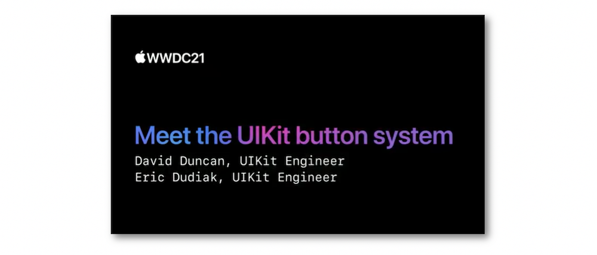
"Every app uses Buttons. With iOS 15, you can adopt updated styles to create gorgeous buttons that fit effortlessly into your interface. We'll explore features that make it easier to create different types of buttons, learn how to provide richer interactions, and discover how you can get great buttons when using Mac Catalyst."
Various contents of this video are indicated hereunder:
Most of the illustrations are parts of the Apple presentations and may be available at the Resources section inside the Overview sheet of each video.
Hereafter, the underlined elements lead directly to the playback of the WWDC video at the appropriate moment.
Button #
New features #
New basic button styles have been added in iOS 15 including a seamless compatibility with various functionalities by default.
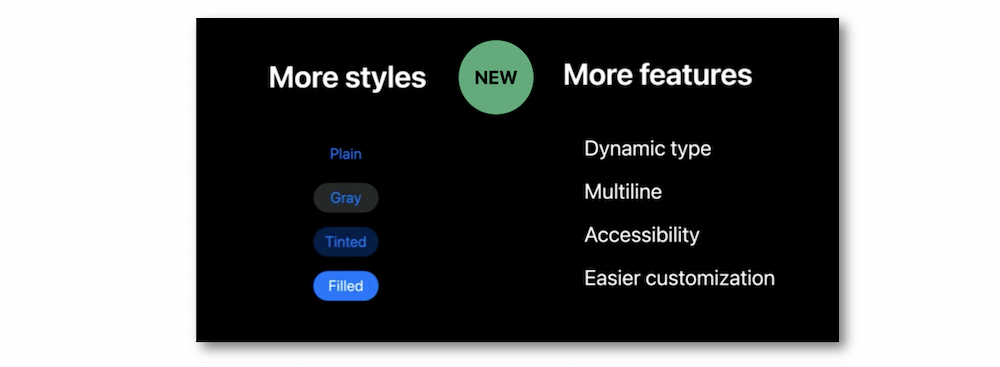
An activity indicator is natively inserted inside the button whose items describing its content are easily tailored at the desired visual.
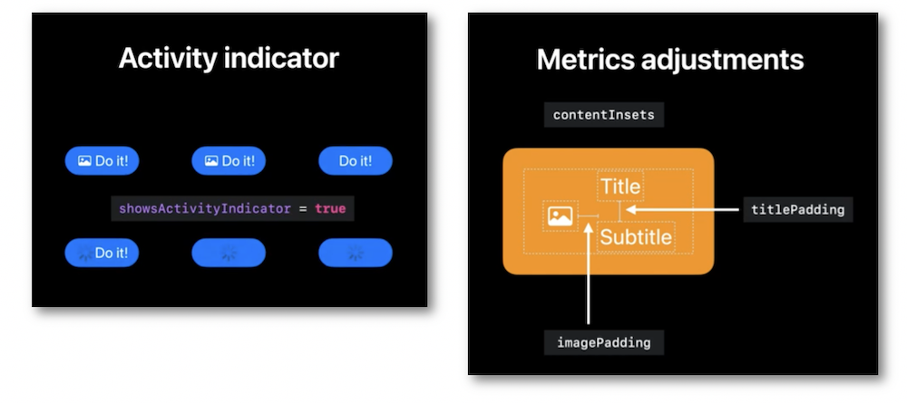
The semantic styling is the best way for a complete and effortless creation of a basic button with possible customizations, naturally.
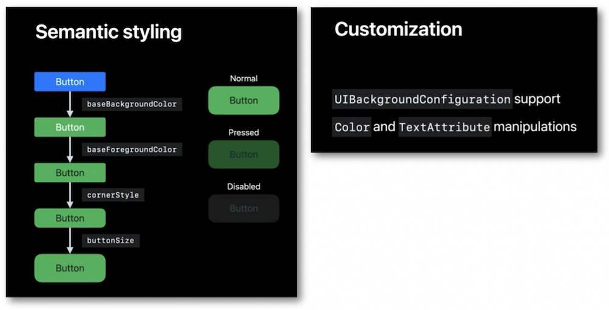
Examples #
🎬 (02:12) ⟹ creation of a simple sign-in button.
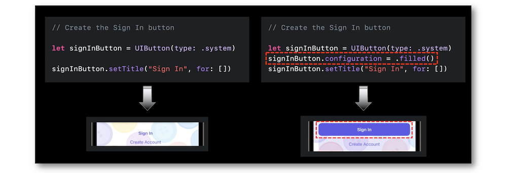
🎬 (03:01) ⟹ generation of an image in a button.
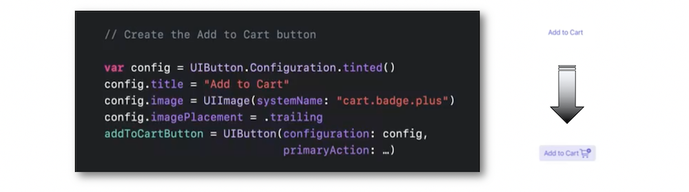
🎬 (04:05) ⟹ dynamic adaptation of the button elements.
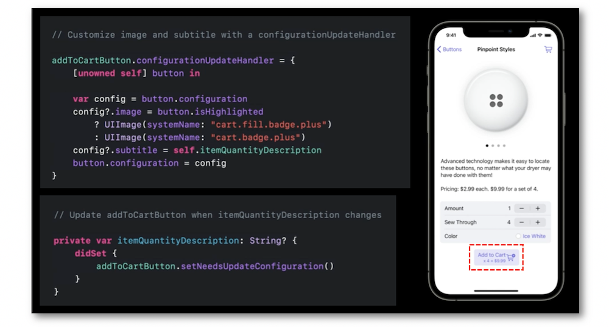
🎬 (08:26) ⟹ button size adjustement using the configuration property.
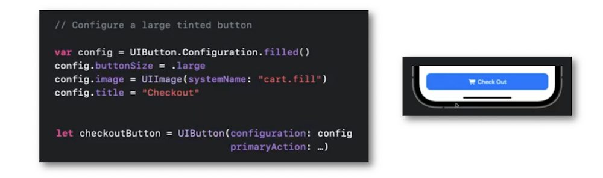
🎬 (08:45) ⟹ insertion of a loading indicator using the configuration property.
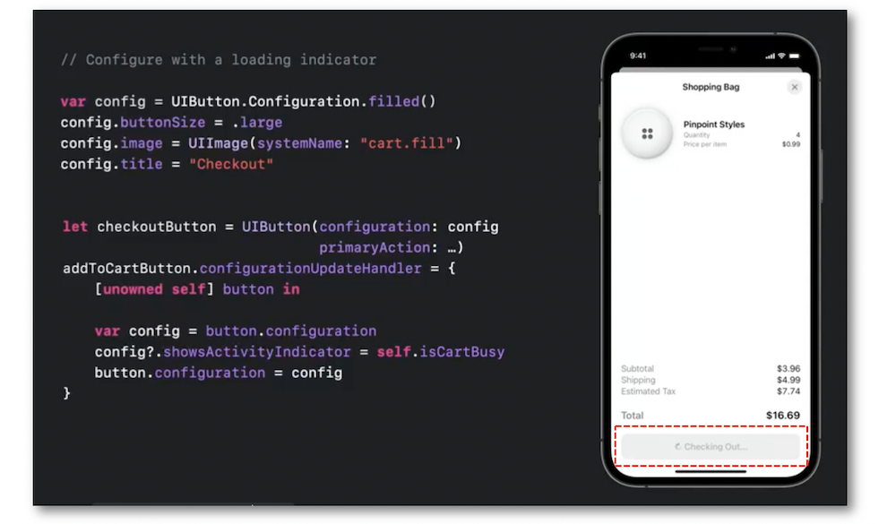
🎬 (09:16) ⟹ configuration of the button background color.
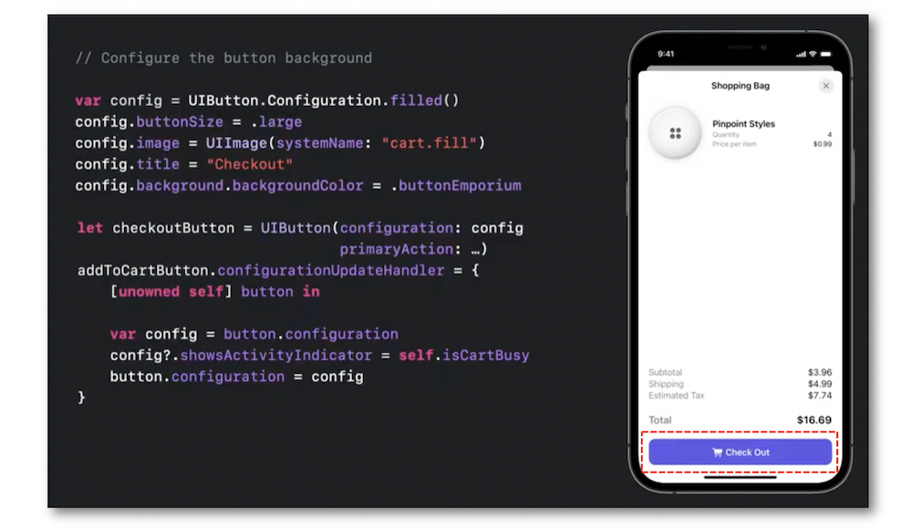
Toggle button #
The goal of this specific button is exactly the same as the UISwitch's and may have the additional asset to take up less space in the interface.
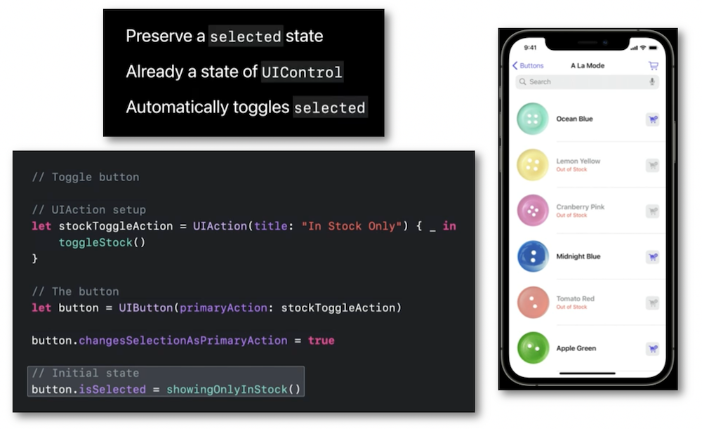
Pop-up button #
A pop-up button stems from a pull-down button by appending the guarantee of having a single selected element in the presented menu.
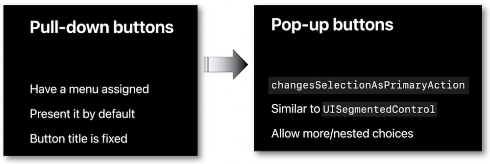
In order to understand the goal of this element, a practical use case is detailed in depth...
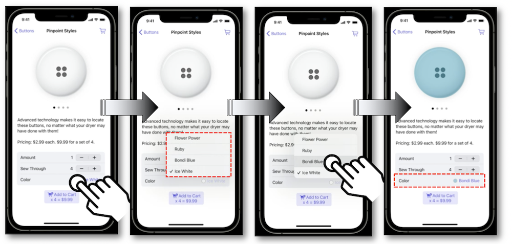
... providing the code for this implementation.
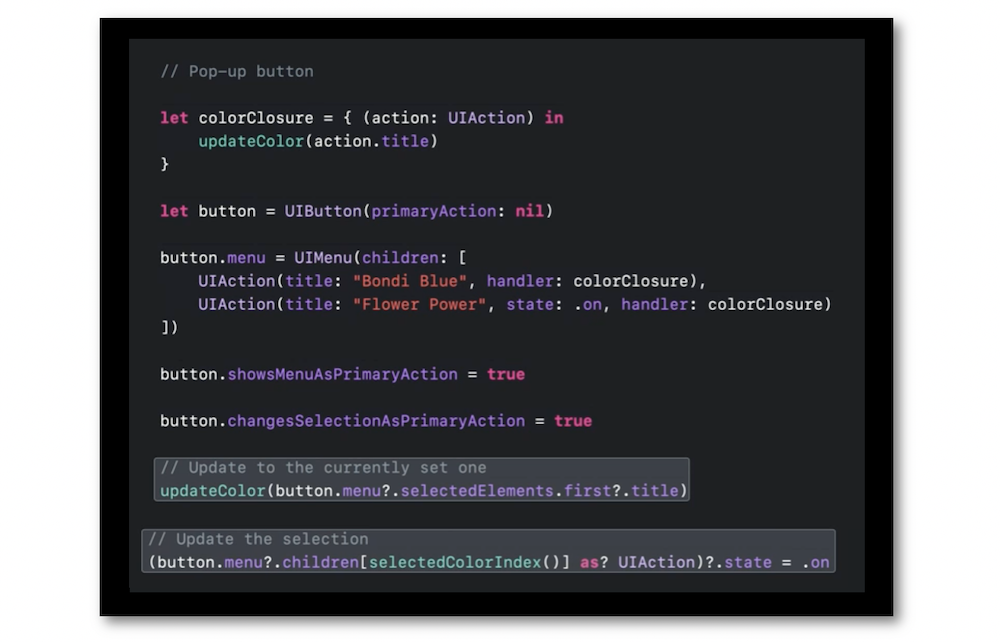
UIMenu #
The various UImenu properties and enhancements join the new button configuration to build styles.
A detailed code writing for implementing a single selection inside a menu/sub-menu hierarchy is also introduced.
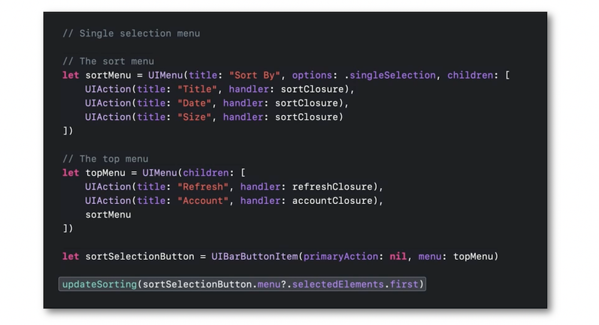
Mac Catalyst #
All these new button styles straightforwardly adapt to the Mac Catalyst environment.
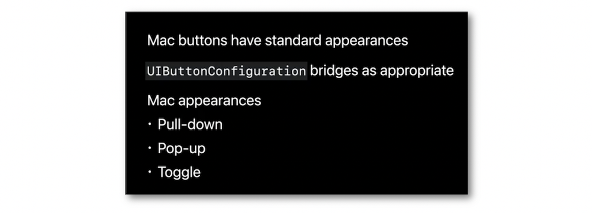
No changes are necessary to notice the perfect adjustement of the button styles from the iPad context to the Mac Catalyst's.
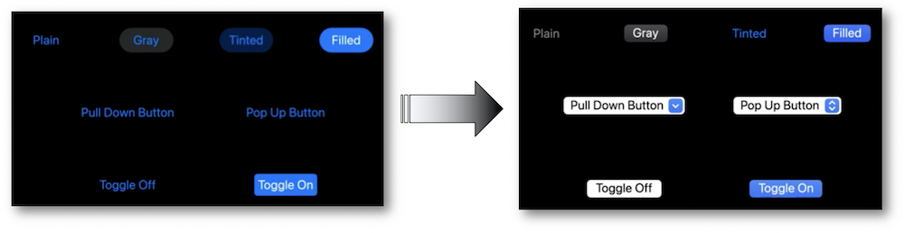
And when a button customization is necessary, it's still possible to point it out using the code.
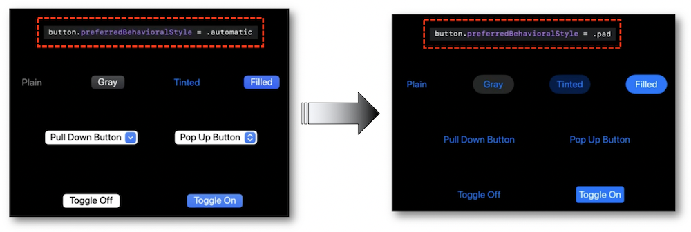